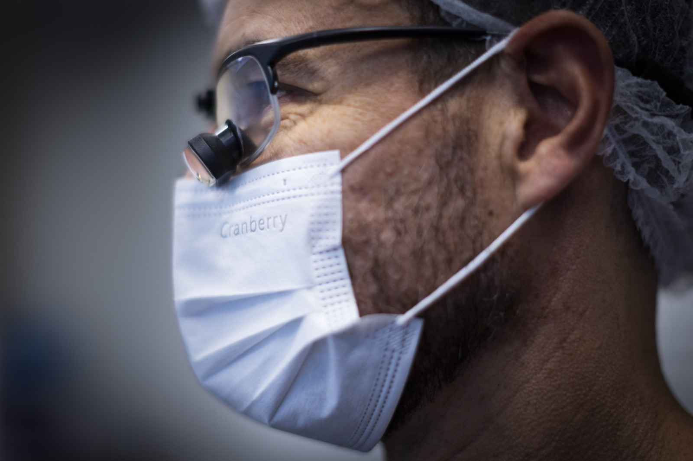
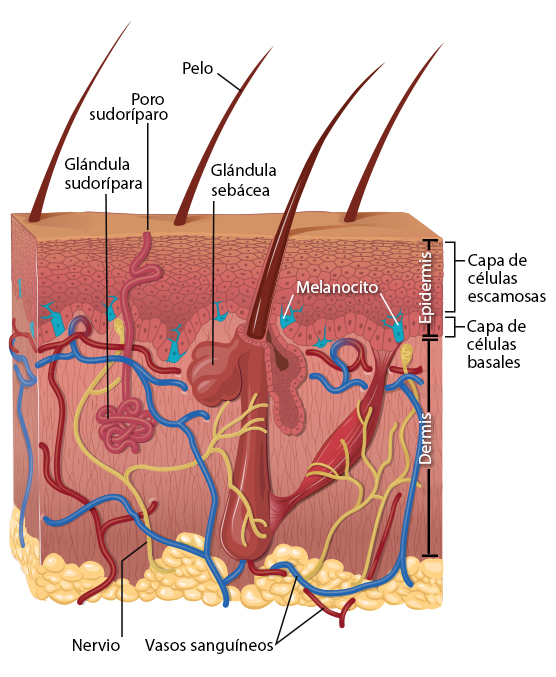
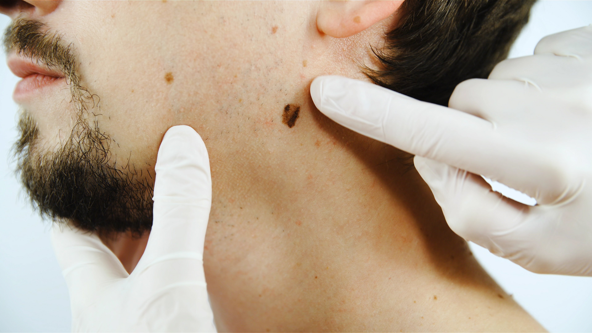
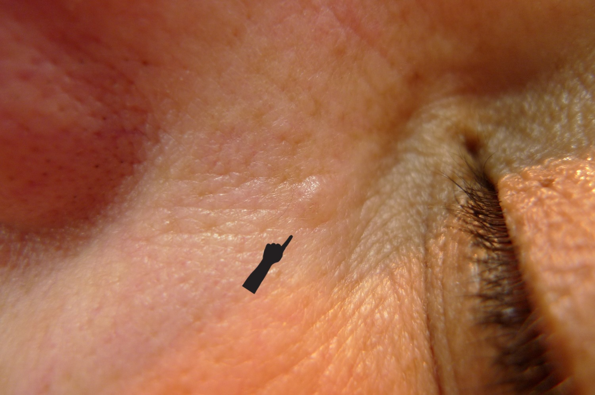
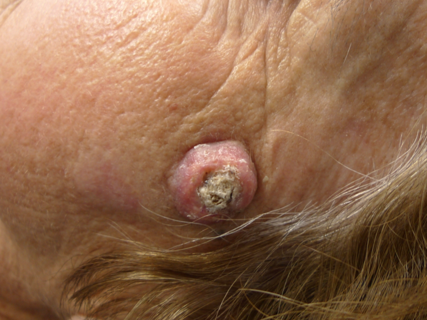
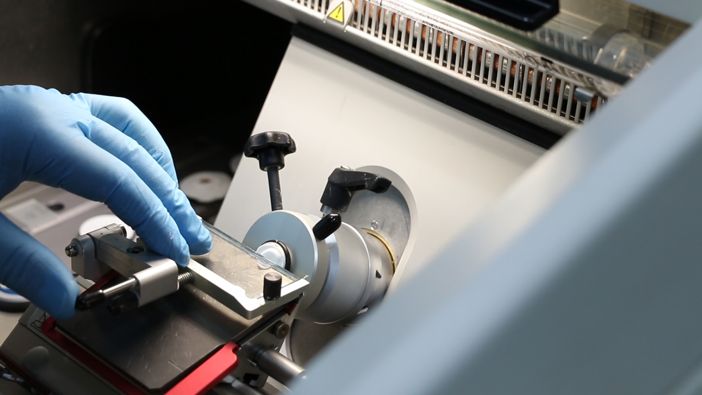
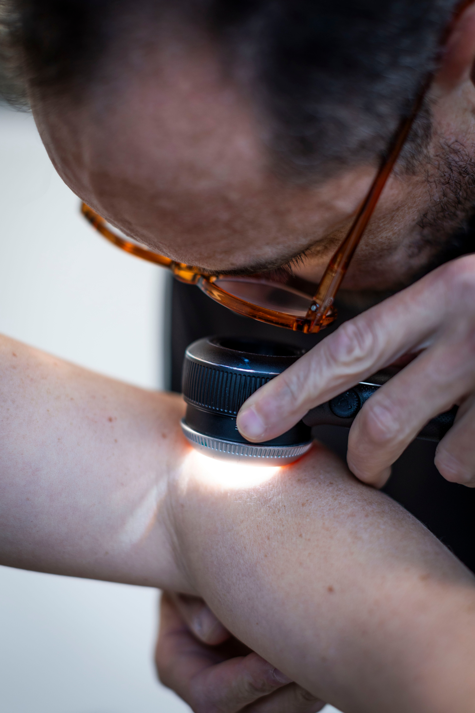

Dr. Rodrigo Schwartz · Dermato-Oncología
Cuidado experto
del Cáncer de Piel.
Dermatólogo y Cirujano de Mohs con más de 20 años de experiencia, con entrenamiento certificado en Canadá y Australia.
Dr. Rodrigo Schwartz · Dermato-Oncología
Dermatólogo y Cirujano de Mohs con más de 20 años de experiencia, con entrenamiento certificado en Canadá y Australia.
El Doctor
Soy Dermatólogo y Cirujano de Mohs con más de 20 años de experiencia, especialista en cáncer de piel desde el diagnóstico hasta el tratamiento quirúrgico, con entrenamiento formal y certificado en Chile, Canadá y Australia.
Busco otorgar una atención integral, humana y personalizada.

Especialidades
Diagnóstico y manejo integral de todas las formas de cáncer cutáneo: carcinoma basocelular, carcinoma espinocelular y melanoma.
Más información →Especialización en el principal centro de melanoma a nivel mundial (Melanoma Institute Australia). El melanoma es el más agresivo de los cánceres cutáneos, con protocolos actualizados de diagnóstico y tratamiento.
Más información →Tratamiento del carcinoma basocelular, el tipo más frecuente de cáncer de piel, con opciones quirúrgicas y no quirúrgicas.
Más información →Especialización en Women's College Hospital en Toronto, Canadá. La técnica con mayor tasa de curación y menor impacto estético para cánceres de piel faciales.
Ver sitio dedicado →Chequeo anual dermatológico exhaustivo con dermoscopia digital para detectar lesiones sospechosas a tiempo.
Más información →Seguimiento fotográfico preciso de lesiones pigmentadas, asistido por inteligencia artificial, para evitar cirugías innecesarias y detectar cambios tempranos.
Más información →Lo que dicen nuestros pacientes
"Excelente experiencia con el Dr. Schwartz, tanto por el aspecto médico como el humano."
"El doctor Rodrigo muy atento, detallista, explica excelente, soluciones rápidas y eficientes. Llegamos al mejor lugar. Gracias por todo — desde Antofagasta vinimos a ver al doctor."
"Muy buena experiencia, el doctor Rodrigo Schwartz súper dedicado, atento y nos explicó todo muy claro. Fue una muy grata experiencia."
"Me atiendo con el doctor Schwartz hace muchos años y no lo cambiaría por nada. Excelente equipo médico, muy atentos y preocupados con el paciente."
Afiliaciones
Información para pacientes






Preguntas frecuentes
Orientación de biopsia
Agenda tu evaluación